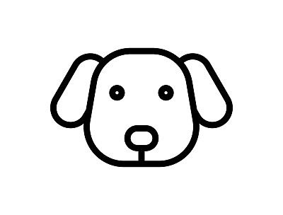

Ah, the eternal dilemma: cats or dogs? Well, both are undeniably adorable, and resisting their charm is as difficult as trying to stop eating potato chips – nearly impossible!
Cats, with their graceful moves and mysterious aura, are like the elegant dancers of the animal kingdom. They have this uncanny ability to make you believe they are the rulers of the universe, and we're just here to serve them.
On the other paw, dogs, those tail-wagging bundles of joy, are like your loyal, goofy best friends. They have this infectious enthusiasm that can turn even the gloomiest day into a tail-wagging, tongue-lolling adventure. Plus, have you ever seen a dog trying to be serious? It's like watching a clown attempting Shakespeare – utterly adorable!
What's your favorite thing about cats or dogs? Here are some hilarious insights I found online from fellow animal enthusiasts!
Let's unleash the ultimate cat vs. dog battle! Time to compare the cuteness and charm of our feline friends and playful pups in various categories!
| Cat | Dog | |
|---|---|---|
| Time-saving | ||
| Obedient |  | |
| Love their humans the most |